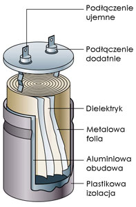
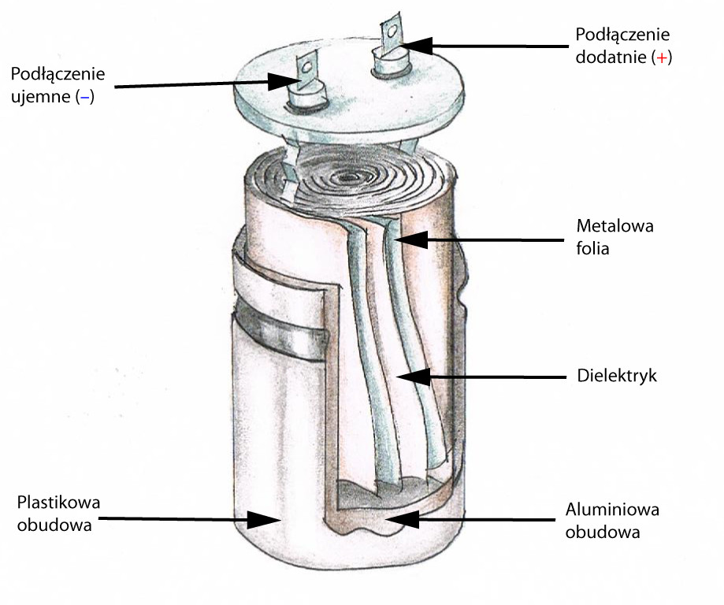

Kondensator to element elektroniczny, który składa się z dwóch przewodzących płyt oddzielonych dielektrykiem.
Kiedy kondensator jest połączony z źródłem napięcia, na jego płytach gromadzi się ładunek elektryczny.

Dielektryk (izolator) między płytami kondensatora pełni rolę izolacji, utrzymując ładunek i uniemożliwiając jego przepływ.
Jednostką pojemności kondensatora jest farad (F).
Kondensatory są szeroko stosowane w elektronice do przechowywania i dostarczania energii elektrycznej w układach elektronicznych.
Mogą być używane do filtrowania sygnałów, stabilizacji napięcia i wielu innych zastosowań.
Warto zauważyć, że kondensatory mają zdolność magazynowania energii elektrycznej, co sprawia, że są kluczowym elementem w dziedzinie elektroniki.
Metalowe Płytki: Kondensator składa się z dwóch metalowych płytek, zazwyczaj wykonanych z aluminium lub innego przewodzącego materiału.
Dielektryk:
Pomiędzy metalowymi płytkami znajduje się dielektryk, czyli materiał izolacyjny. Popularnym dielektrykiem jest m.in. folia polietylenowa lub ceramika. Dielektryk izoluje obie płytki, umożliwiając gromadzenie ładunku.

Łączniki:
Płytki są połączone z zewnętrznym obwodem za pomocą przewodzących łączników, umożliwiając przepływ prądu.
Pojemność:
Istotną cechą kondensatora jest jego pojemność, mierzona w faradach (F), określająca zdolność kondensatora do gromadzenia ładunku.
Pojemność kondensatora to istotna właściwość określająca zdolność kondensatora do magazynowania ładunku elektrycznego. Pojemność jest definiowana jako stosunek ładunku (Q), który kondensator jest w stanie zgromadzić, do różnicy potencjałów (napięcia) między jego okładkami. Wzór na pojemność kondensatora można zapisać jako
C =Q/U
Gdzie
C to pojemność, Q to ładunek, a U to napięcie.